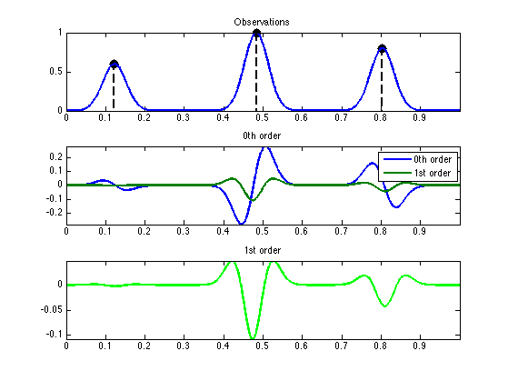
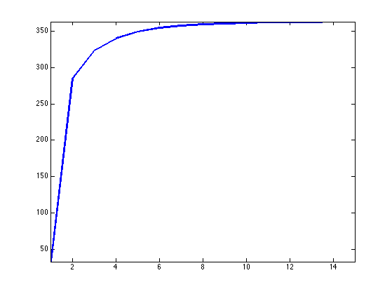
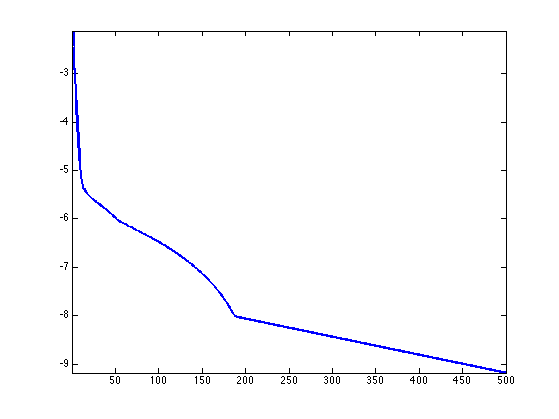
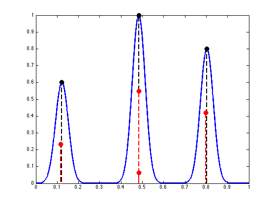
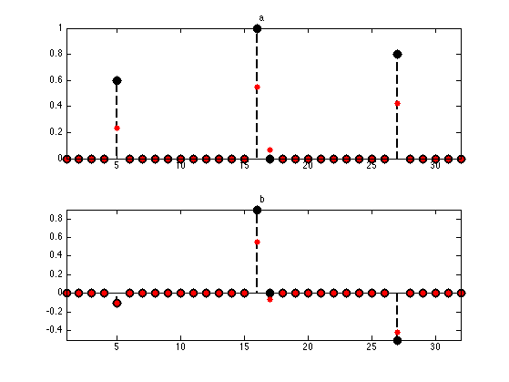
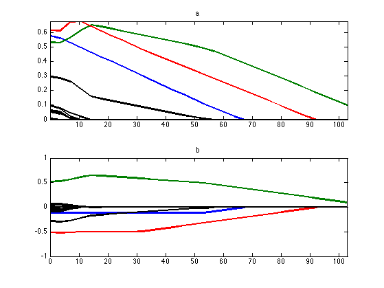

Sparse Spikes Deconvolution with Continuous Basis-Pursuit
This numerical tour explores the use of the continuous Basis-Pursuit (C-BP) method to perform sparse deconvolution. This method was proposed in [Ekanadham11].
Contents
Installing toolboxes and setting up the path.
You need to download the following files: signal toolbox and general toolbox.
You need to unzip these toolboxes in your working directory, so that you have toolbox_signal and toolbox_general in your directory.
For Scilab user: you must replace the Matlab comment '%' by its Scilab counterpart '//'.
Recommandation: You should create a text file named for instance numericaltour.sce (in Scilab) or numericaltour.m (in Matlab) to write all the Scilab/Matlab command you want to execute. Then, simply run exec('numericaltour.sce'); (in Scilab) or numericaltour; (in Matlab) to run the commands.
Execute this line only if you are using Matlab.
getd = @(p)path(p,path); % scilab users must *not* execute this
Then you can add the toolboxes to the path.
getd('toolbox_signal/'); getd('toolbox_general/');
Sparse Spikes Deconvolution
We consider the problem of estimating an unknown Radon measure \(m_0 \in \Mm(\mathbb{T})\) from low-resolution noisy observations \[ y=\Phi(m_0)+w_0 \in L^2(\mathbb{T}) \] where \( w_0 \in L^2(\mathbb{T})\) is some measurement noise, and \( \Phi : \Mm(\mathbb{T}) \rightarrow L^2(\mathbb{T}) \) is a convolution operator operator with a smooth kernel \( \phi \in C^2(\mathbb{T}) \), i.e. \[ \forall x \in \mathbb{T}, \quad (\Phi m)(x) = \int_{\mathbb{T}} \phi(x - y) d m(y). \] We focus our attention here for simplicity on the compact 1-D domain \(\mathbb{T}=\RR/\ZZ\) (i.e. an interval with periodic boundary conditions) but the continuous basis-pursuit method can be extended to higher dimensional settings.
In order to recover sparse measures (i.e. sums of Diracs), it makes sense to consider the following regularization (sometimes called BLASSO for Beurling LASSO in [deCastroGamboa12]) \[ \umin{m \in \Mm(\mathbb{T})} \frac{1}{2}\norm{y-\Phi(m)}^2 + \la \abs{m}(\mathbb{T}) \] where \(\abs{m}(\mathbb{T})\) is the total variation of the measure \(m\), defined as \[ \abs{m}(\mathbb{T}) = \sup \enscond{ \int_{\mathbb{T}} g(x) d m(x) }{ g \in \Cc(\mathbb{T}), \: \normi{g} \leq 1 }.\] This formulation of the recovery of sparse Radon measures has recently received lots of attention in the literature, see for instance the works of [CandesFernandezGranda13,deCastroGamboa12,DuvalPeyre13].
The BLASSO optimization problem is convex but infinite dimensional, and while there exists solvers when \(\Phi\) is measuring a finite number of Fourier frequency (see [CandesFernandezGranda13], and the related Numerical Tour "Sparse Spikes Deconvolution over the Space of Measures"), they are do not scale well with the number of frequencies. The vast majority of practitioners thus approximate the recovery over arbitrary measures by a finite dimensional problem computed over a finite grid \(z = (z_i)_i \in \mathbb{T}^N\), by restricting their attention to measures of the form \[ m_{a,z} = \sum_{i=1}^N a_i \de_{z_i} \in \Mm(\mathbb{T}). \] For such a discrete measure, one has \( \abs{m_{a,z}}(\mathbb{T}) = \norm{a}_1\), which can be interpreted as the fact that \(\abs{\cdot}(\mathbb{T})\) is the natural extension of the \(\ell^1\) norm from finite dimensional vectors to infinite dimensional space of measures. Inserting this parameterization inside the BLASSO leads to the celebrated Basis-Pursuit problem [Chen99], \[ \umin{a \in \RR^N} \frac{1}{2}\norm{y-\Phi_z a}^2 + \la \norm{a}_1. \] where in the following we make use of the notations \[ \Phi_z a = \sum_{i=1}^N a_i \phi(\cdot-z_i), \] \[ \Phi_z' b = \sum_{i=1}^N b_i \phi'(\cdot-z_i). \] One can understand the BP problem as performing a nearest neighbor interpolation of the Dirac's locations.
Continuous Basis-Pursuit
To obtain a better approximation of the infinite dimensional problem, [Ekanadham11] proposes to perform a first order approximation of the kernel. This method assumes that the measures are positive.
To ease the exposition, we consider an uniform grid \(z_i=i/N\) of \(N\) points, so that the grid size is \(\De=1/N\). The C-BP method solves \[ \umin{(a,b) \in \RR^N \times \RR^N} \norm{ y - \Phi_z a - \frac{\De}{2} \Phi'_z b }^2 + \la \norm{a}_1 \] subject to \[ \abs{b} \leq a \qandq a \geq 0 \] where the constraint inequalities should be understood to hold coordinate-wise. This is a convex optimization problem, which can be solved using traditional conic optimization methods. We detail in this tour a simple proximal splitting scheme which can be used.
If \((a^\star,b^\star)\) are solutions of C-BP, one recovers an output discrete measure defined by \[ m^\star = \sum_{a^\star_i \neq 0} a^\star_i \de_{x_i^\star} \qwhereq x_i^\star = z_i + \frac{\De b_i^\star}{2 a_i^\star} . \] The rationale behind C-BP is to perform a first order Taylor approximation of the kernel \(\Phi\), where the variable \(\tau_i = \De b_i /(2 a_i) \in [-\De/2,\De/2]\) encodes the horizontal shift of the Dirac location with respect to the grid sample \(z_i\). The landmark idea introduced in [Ekanadham11] is that, while the optimization is non-convex with respect to \(\tau\), it is convex with respect to \(b\).
Convolution Operators
We define continuous kernel, defined on \( [0,1] \), and select here Gaussian kernels \[ \phi(t) = \exp\pa{ - \frac{t^2}{2 \sigma^2} }, \] \[ \phi'(t) = -\frac{t}{\sigma^2} \exp\pa{ - \frac{t^2}{2 \sigma^2} }. \]
sigma = .03; phi = @(t)exp(-t.^2/(2*sigma^2)); phi1 = @(t)-t/(sigma^2).*exp(-t.^2/(2*sigma^2));
Set the discretization size \(\De = 1/N\).
N = 32; Delta = 1/N;
We discribed the method using continuous observation \(y \in L^2(\mathbb{T})\). In fact, it can be applied to a discretized obervation space as well. We set \(P\) to be the number of observation points.
rho = 64; P = N*rho;
Useful helpers: computer periodic convolutions, and adjoint of convolution (i.e. convolution with the time-reversed kernel).
convol = @(x,h)real(ifft(fft(x).*fft(h))); convolS = @(x,h)real(ifft(fft(x).*conj(fft(h))));
Up-sampling and down-sampling operator from the sampling to the observation grid.
upsample = @(x,rho)upsampling(x,1,rho); downsample = @(y,rho)y(1:rho:end);
Observation grid and sampling grid.
t = [0:P/2, -P/2+1:-1]' / P; t1 = (0:P-1)'/P;
Discretize the filter on the observation grid.
phi_d = phi(t); phi1_d = phi1(t);
Operator \(\Phi_z\), \(\Phi_z^*\), \(\De/2 \Phi_z'\), \((\De/2 \Phi_z')^{*}\), \( \Ga_z = [\Phi_z, \De/2 \Phi_z'] \) and \(\Ga_z^*\).
Phi = @(x)convol(upsample(x,rho),phi_d); PhiS = @(x)downsample(convolS(x,phi_d),rho); Psi = @(s)convol(upsample(s,rho),phi1_d)*Delta/2; PsiS = @(s)downsample(convolS(s,phi1_d),rho)*Delta/2; Gamma = @(u)Phi(u(:,1)) - Psi(u(:,2)); GammaS = @(y)[PhiS(y), -PsiS(y)];
Generate the input signal \(m_{a_0,x_0}\) composed of three spikes. The variable \(\kappa \in [0,1]\) controls the amount of shift between the locations \(x_0\) and the sampling grid. The larger \(\kappa\), the worse is the approximation performed by C-BP. Setting \(\kappa\) close to 1 will make C-BP fail to estimate correctly the number of spikes of the input measure.
k = 3; % number of spikes
kappa = .9;
I = round( N/(2*k):N/k:N );
a0 = zeros(N,1); a0(I) = [.6 1 .8];
d0 = zeros(N,1); d0(I) = [-.2 1 -.7] * kappa;
b0 = d0.*a0;
x0 = (0:N-1)'/N + d0*Delta/2;
Generate the true observations \(y=\Phi(m_{a_0,x_0})\). Note that here we assume there is no noise, i.e. \(w_0=0\). It is important to realize that, even if there is no noise, when the spikes are off the grid, the linear approximation made by C-BP (and of course also by BP) create an error term which should be interpreted as noise. This thus necessitate the use of a well-chosen value of \(\lambda\), which should scale like \(\De^2\) (magnitude of the approximation error).
y = zeros(P,1); for i=1:length(x0) T = t-x0(i); T = mod(T,1); T(T>.5) = T(T>.5)-1; y = y + a0(i) * phi( T ); end
Generate the basis pursuit approximation (quantification) \(y=\Phi_z a_0\).
y0 = Phi(a0);
Generate C-BP approximation (linear approximation) \(y=\Ga_z (a_0,b_0)\).
y1 = Gamma([a0 b0]);
Display.
lw = 2; msB = 30; mystem = @(x,y, col)stem(x, y, [col '.--'], 'MarkerSize', msB, 'LineWidth', lw); subplot(3,1,1); hold on; mystem(x0(I), a0(I), 'k'); box on; plot(t1, y, 'LineWidth', lw); axis tight; title('Observations'); subplot(3,1,2); plot(t1, [y-y0 y-y1], 'LineWidth', lw); axis tight; title('0th order'); legend('0th order', '1st order'); subplot(3,1,3); plot(t1, y-y1, 'g', 'LineWidth', lw); axis tight; title('1st order');
Proximal Operators for C-BP
For simplicity, we re-write the initial C-BP optimization problem as follow. The C-BP constraint set reads \[ \Cc =\enscond{(a,b) \in \RR^N \times \RR^N}{ a \geq 0 \qandq \abs{b} \leq a}. \] We introduce the convex gauge \(J\) such that \[ \forall u = (a,b) \in \RR^{N} \times \RR^N, \quad J(u) = \norm{a}_1 + \iota_{\Cc}(u), \] and the linear operator \(\Gamma_z\) such that \[ \forall u = (a,b) \in \RR^{N} \times \RR^N, \quad \Ga_z u = \Phi_z a + \frac{\De}{2} \Phi_z' b. \] Then, we may conveniently rewrite the C-BP problem as \[ \umin{u \in \RR^{N} \times \RR^N} \frac{1}{2}\norm{y-\Ga_z u}^2 + \la J(u). \]
The main ingredient to develop these schemes is the so-called proximal operator associated to a proper lower semi-continuous convex function \(f : \Hh \rightarrow \RR \cup \{+\infty\}\) (where \(\Hh\) is some Hilbert space) \[ \forall u \in \Hh, \quad \text{Prox}_{\ga f}(u) = \uargmin{u' \in \Hh} \frac{1}{2}\norm{u-u'}^2 + \ga f(u'). \]
One can note that the \(J\) functional, defined on \(\Hh=\RR^N \times \RR^N\) can written as \[ J(a,b) = \iota_{\Cc}(a,b) + \dotp{(a,b)}{\xi} \] \[ \qwhereq \xi = (1,\ldots,1, 0,\ldots,0) \in \RR^N \times \RR^N \]
It is thus the perturbation of \(\iota_{\Cc}\) with a linear form. This allows one to compute the proximal operator of the \(J\) functional as \[ \forall u \in \Hh, \quad \text{Prox}_{\ga J}(u) = \text{Proj}_\Cc\pa{ u - \la \xi } \] where \(\text{Proj}_\Cc\) is the orthogonal projector on the cone \(\Cc\).
It can be computed as \[ \forall u = (a,b) \in \Hh, \quad \text{Proj}_\Cc(u) = (\tilde a,\tilde b) \] \[ \qwhereq \forall i=1,\ldots,N, \quad (\tilde a_i,\tilde b_i) = R^* ( R (a_i,b_i) )_+ \] where \(R \in \RR^{2 \times 2}\) is the rotation of angle \(\pi/4\), and where we have noted \[ \forall (\al,\be) \in \RR^2, \quad (\al,\be)_+ = (\max(\al,0),\max(\be,0)) \]
C = @(u)u(:,2)+1i*u(:,1); Ci = @(v)[imag(v), real(v)]; ProjOct = @(v)max(real(v),0) + 1i*max(imag(v),0); ProjC = @(u)Ci(exp(1i*pi/4)*ProjOct(exp(-1i*pi/4)*C(u)));
Callback for the proximal operator of \(J\).
ProxJ = @(w,lambda)ProjC( w-[lambda*ones(size(w,1),1) zeros(size(w,1),1)] );
Numerical Resolution with Foward-Backward
Starting with an initial \(u^{(0)} \in \Hh\), the forward-backward iterations to solve C-BP reads \[ u^{(\ell+1)} = \text{Prox}_{\tau \la J}( u^{(\ell)} - \tau \Ga_z^* ( \Ga_z u^{(\ell)} - y ) ). \] For a step size satisfying \(0 < \tau < 2/\norm{\Ga_z}^2\), one can show that \(u^{(\ell)} \rightarrow u^\star\) which is a solution of C-BP, see for instance [CombettesPesquet10].
Exercice 1: (check the solution) Compute the Lipschitz constant \(L=\norm{\Ga_z}^2\). Hint: you can use power iteration to estimate the largest eigenvalues of \(\Ga_z^*\Ga_z\). We display here the evolution of the estimate of this eigenvalue with the number of power iterations.
exo1;
Regularization parameter \(\la\).
lambda = 40;
Function \(F(u) = \frac{1}{2}\norm{\Ga_z u - y}^2\) and its gradient \( \nabla F(u) = \Ga_z^*( \Ga_z u - y ). \)
F = @(u)1/2*norm(y-Gamma(u), 'fro')^2;
gradF = @(u)GammaS(Gamma(u)-y);
Energy without the constraint \( E(u) = F(u) + \la \norm{u}_1 \).
E = @(u)F(u) + lambda*norm(u(:,1),1);
Initialization \(u^{(0)}\) of the algorithm.
u = zeros(N,2);
Exercice 2: (check the solution) Implement the forward-backward algorithm. Monitor the decay of the energy \( \log_{10}( E(u^{(\ell)})/ E^\star -1 ) \) where \(E^\star\) is an estimate of the minimum energy (obtained by running the algorithm with a lot of iterations.
exo2;
Recovered parameter \(a,b,x\) that are intended to approximate \(a_0,b_0,x_0\).
a = u(:,1); b = u(:,2); delta = Delta/2 * b./a; delta(a<1e-9) = 0; x = (0:N-1)'/N + delta;
Display recovered measures.
J = find(a>1e-3); t = (0:N-1)'/N; s = (0:P-1)'/P; clf; hold on; plot(s, y, 'LineWidth', 2); mystem(x0(I), a0(I), 'k'); % initial spikes mystem(t(J) + delta(J), a(J), 'r'); % recovered spikes axis([0 1 0 1]); box on;
Display estimated vectors.
subplot(2,1,1); hold on; mystem(1:N, a0, 'k'); plot(a, 'r.', 'MarkerSize', 20); axis tight; box on; title('a'); subplot(2,1,2); hold on; mystem(1:N, b0, 'k'); plot(b, 'r.', 'MarkerSize', 20); axis tight; box on; title('b');
Exercice 3: (check the solution) Compute the full homotopy path \(\la \mapsto (a_\la,b_\la) \) where \( (a_\la,b_\la) \) is the solution of C-BP with regularization parameter \(\la\). The display bellow shows in color the evolution of the correctly estimated spikes and in black wrong perturbating spikes. Test with different values of \(\kappa\). What can you conclude about the performances of C-BP ?
exo3;
Bibliography
- [Ekanadham11] C. Ekanadham, D. Tranchina, and E.P. Simoncelli. Recovery of sparse translation-invariant signals with continuous basis pursuit. IEEE Transactions on Signal Processing, 59(10):4735-4744, 2011.
- [CombettesPesquet10] P.L. Combettes and J-C. Pesquet, Proximal Splitting Methods in Signal Processing, in: Fixed-Point Algorithms for Inverse Problems in Science and Engineering, New York: Springer-Verlag, 2010.
- [DuvalPeyre13] V. Duval and G. Peyre, Exact Support Recovery for Sparse Spikes Deconvolution, preprint hal-00839635, 2013
- [deCastroGamboa12] Y. de Castro and F. Gamboa. Exact reconstruction using beurling minimal extrapolation. Journal of Mathematical Analysis and Applications, 395(1):336-354, 2012.
- [CandesFernandezGranda13] E. J. Candes and C. Fernandez-Granda. Towards a mathematical theory of super-resolution. Communications on Pure and Applied Mathematics. To appear., 2013.
- [Chen99] S.S. Chen, D.L. Donoho, and M.A. Saunders. Atomic decomposition by basis pursuit. SIAM journal on scientific computing, 20(1):33-61, 1999.
- [Yu13] Y. Yu, On the decomposition of the proximal map, Proc. NIPS, 2013.